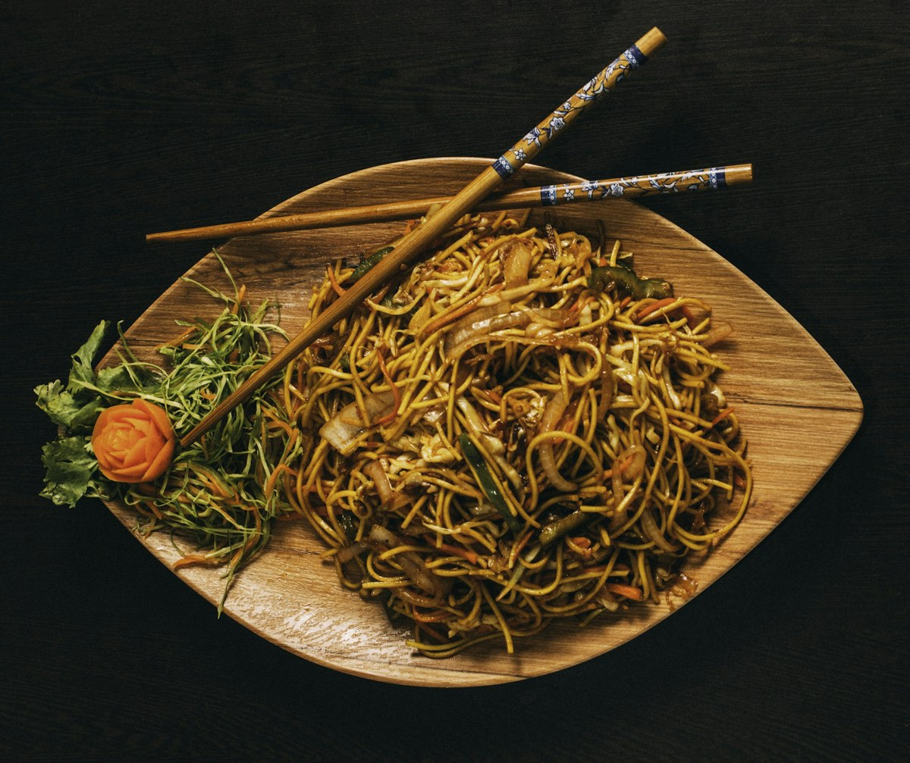
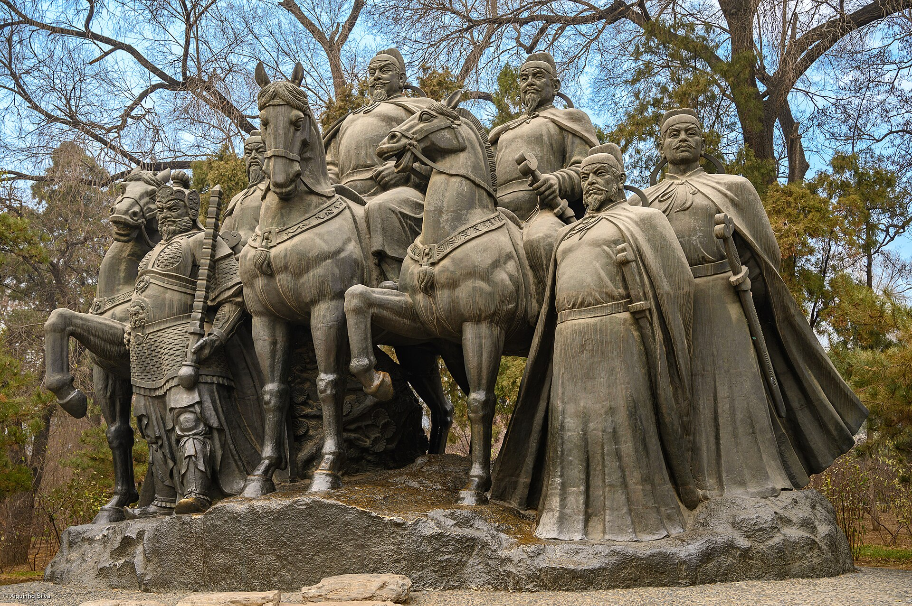
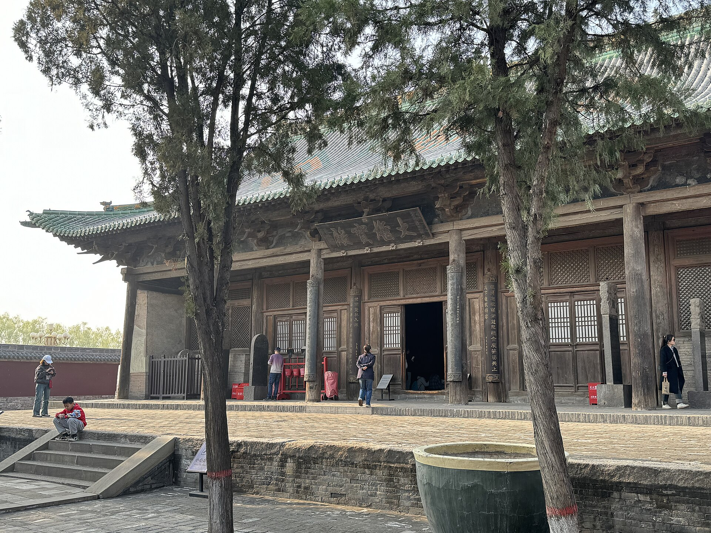
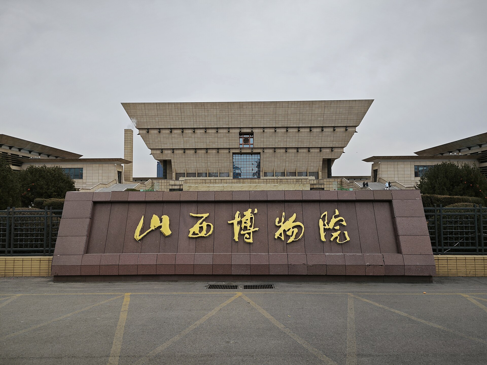

美食
刀削面、过油肉、羊杂割、太原头脑、平遥牛肉、碗托、莜面栲栳栳、猫耳朵、太谷饼，一路吃不重样。

太原 + 平遥 · 5 天 4 晚
淄博出发 · 两人 · 10.2—10.6 · 美食 + 古迹为主，每天核心项目不超过 3 个
亮点速览

刀削面、过油肉、羊杂割、太原头脑、平遥牛肉、碗托、莜面栲栳栳、猫耳朵、太谷饼，一路吃不重样。

晋祠圣母殿、山西博物院鸟尊、平遥古城通票 22 景、双林寺彩塑、镇国寺五代木构、王家大院。

10 月上旬秋高气爽，平遥城墙日落、古城夜色、晋祠园林泉水，适合慢逛不赶场。
大交通
行程速览
| 日期 | 上午 | 下午 | 晚上 |
|---|---|---|---|
| D1（10/2） | 淄博→太原动车 | 山西博物院 | 食品街/柳巷晚餐 |
| D2（10/3） | 太原南→平遥 | 城墙+日升昌+县衙 | 明清街夜景、碗托牛肉 |
| D3（10/4） | 双林寺 | 镇国寺→古城留白 | 古城内晚餐 |
| D4（10/5） | 平遥→灵石→王家大院 | 返太原 | 太原晋菜 |
| D5（10/6） | 晋祠（推荐）或迎泽公园 | 返程淄博 | — |
每日详细安排

住宿
美食清单


必吃：刀削面、过油肉、羊杂割、头脑（清和元等，吃不惯浅尝）、平遥牛肉、碗托/碗团、莜面栲栳栳、猫耳朵、太谷饼、糖醋丸子。
找店：太原去食品街/柳巷及居民区老店；平遥南大街游客价偏高，往小巷找本地人店。点评「必吃榜」+ 饭点有本地人排队是信号。山西菜分量大，两人点菜量力而行。
十一特别提示
山西博物院（免费实名）、晋祠（80 元）、平遥通票（125 元/3 日）、王家大院（55 元）、双林寺 35 / 镇国寺 25。均走官方微信/小程序，建议 9 月底前搞定；以官方最新公告为准。
弹性备选